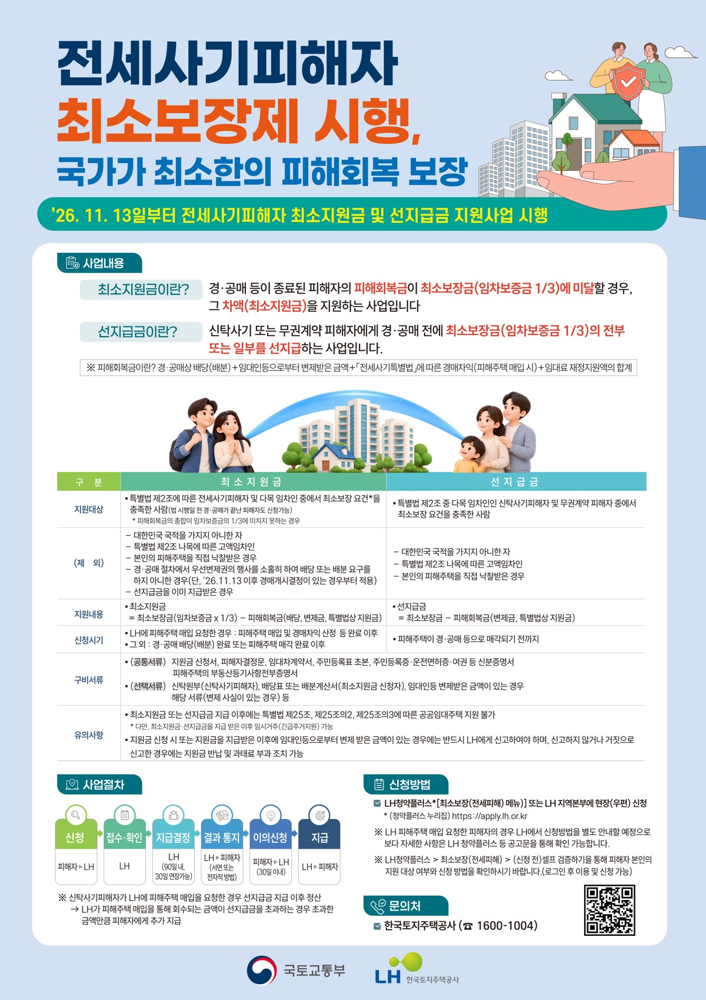
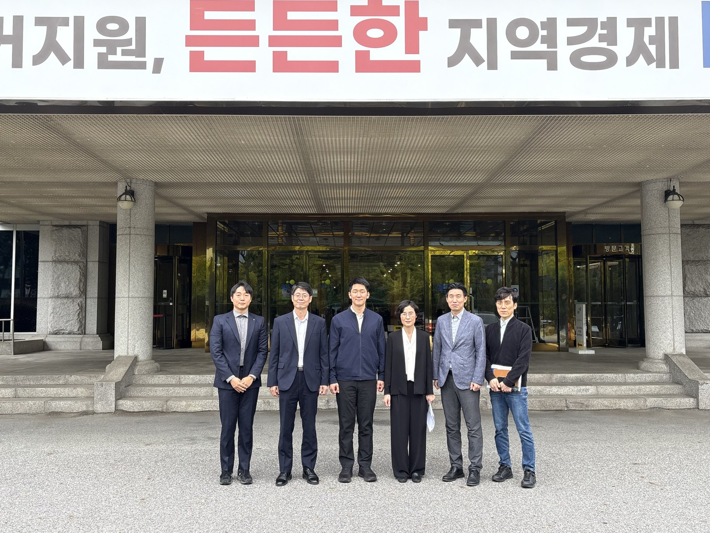
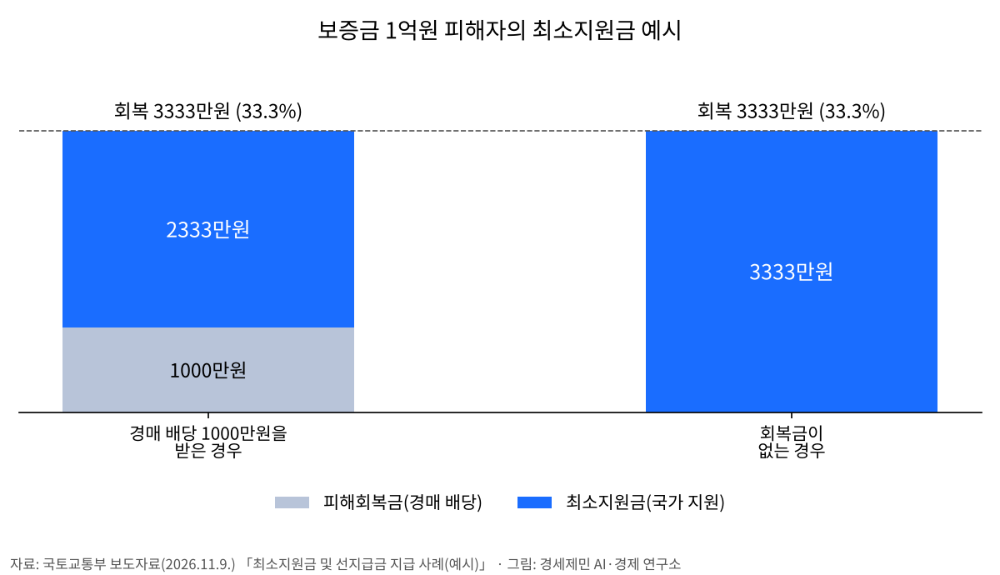
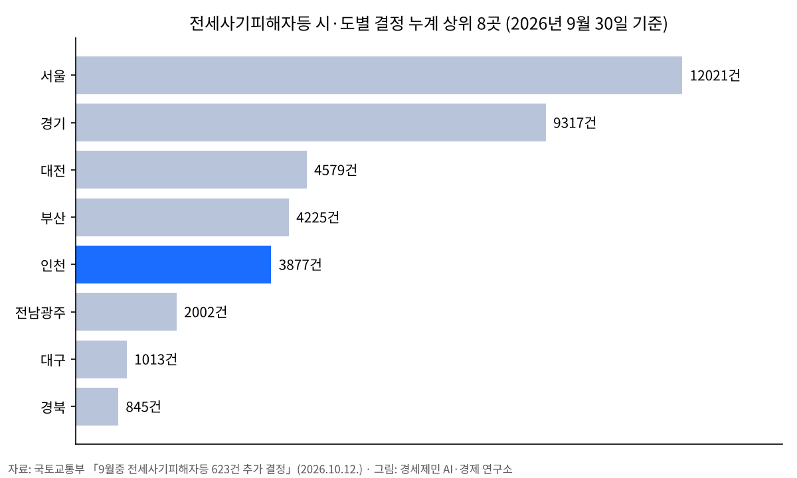
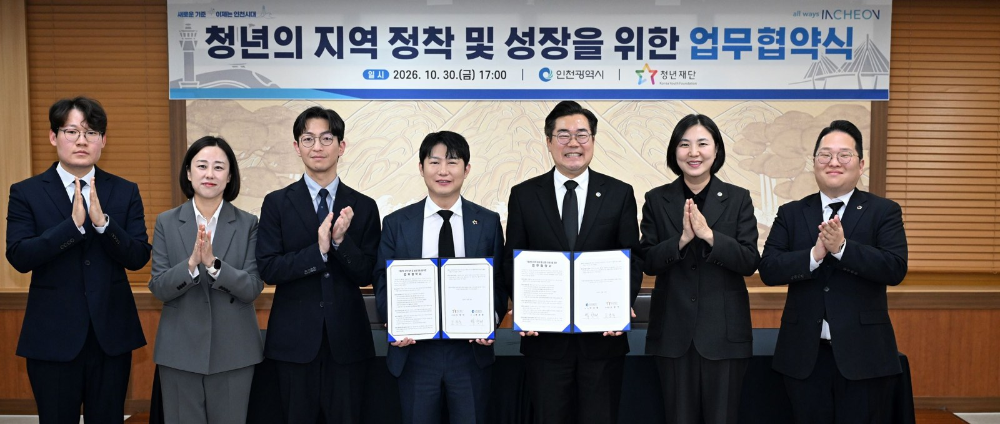

전세사기 보증금 3분의 1 국가 보장 11월 13일 시행, 인천 피해 결정 3877건
13일 최소보장제 시행, LH 10일부터 온라인 사전 신청
인천시 지원금은 피해회복금 계산에서 제외
AI경제저널=김갑봉 기자 | 전세사기 피해자가 경매 등으로 돌려받은 돈이 보증금의 3분의 1에 못 미치면 국가가 그 차이를 현금으로 메운다. 국토교통부는 이 최소보장제를 11월 13일부터 시행한다고 9일 밝혔다. 신청은 10일부터 한국토지주택공사(LH) 청약플러스에서 온라인으로 먼저 받는다.
인천에서 9월 말까지 전세사기피해자등으로 결정된 건수는 3877건이다. 국내 전체 4만1559건 가운데 9.3%다(AI경제저널 계산). 이 가운데 경매 배당 등으로 돌려받은 돈이 보증금의 3분의 1에 못 미치는 피해자가 신청할 수 있다.

보증금 3분의 1까지 부족분 지원
제도는 지난 5월 12일 개정·공포된 전세사기피해자 지원 및 주거안정에 관한 특별법에 따른 것이다. 국토교통부는 10월 시행령과 시행규칙을 고쳐 산정기준과 신청 절차를 정했다. 지급과 정산은 LH가 맡는다. 법 공포 뒤 6개월 만의 시행이다.

최소지원금은 보증금의 3분의 1에서 피해회복금을 뺀 금액이다. 피해회복금은 경매 배당액, 임대인이나 공인중개사에게서 돌려받은 돈, LH 매입 때 생기는 경매차익, 공공임대 주거지원 때 받은 임대료 지원액을 더한 것이다. 경매차익은 LH가 피해주택을 사들일 때 생기는 감정가와 낙찰가의 차이다.
국토교통부가 든 예시를 보면 보증금 1억원에 배당 1000만원을 받은 피해자는 2333만원을 더 받는다. 회복액은 3333만원으로 보증금의 33.3%다. 배당 등 회복금이 전혀 없다면 3333만원을 모두 최소지원금으로 받는다.

대상은 특별법에 따른 전세사기피해자와, 피해자등으로 결정된 보증금 5억원 이하 임차인이다. 외국인과 보증금 5억원 초과 임차인, 피해주택을 직접 사들인 사람은 뺀다. 11월 13일 이후 처음 경매개시결정이 났는데 배당요구를 하지 않은 사람도 받을 수 없다. 포스터는 지원금을 받은 뒤 특별법 제25조 등의 공공임대주택 지원은 받을 수 없고 긴급주거지원은 가능하다고 안내한다.
국토연구원은 2024년 3월 국토정책브리프에서 보증금 미반환에 따른 대위변제가 2억원 수준 보증금에 몰렸다고 분석했다. 지원은 5억원 이하 임대차에 모으자고 제안했다. 9월 말 누계 결정 건수의 85.5%가 보증금 2억원 이하다(AI경제저널 계산). 보증금이 2억원이면 최소 회복액은 6667만원이다.
인천 3877건, 국내 다섯째
인천은 서울 1만2021건, 경기 9317건, 대전 4579건, 부산 4225건에 이어 국내 다섯째다. 국토교통부가 10월 12일 발표한 9월 말 누계다. 9월 한 달 동안 국내에서 623건이 추가로 결정됐다. 수도권 세 시·도가 전체의 60.7%다.
9월 말 누계로 결정 건수 가운데 보증금 1억원 이하가 42.0%, 1억원 초과 2억원 이하가 43.5%다. 피해 주택은 다세대 28.3%, 오피스텔 21.0%, 다가구 18.8% 순이다. 셋을 합친 건수는 68.2%다(AI경제저널 계산). 피해자 75.9%가 40세 미만이다.
피해자가 LH에 매입을 요청한 1만5572건 가운데 9월 말까지 1만1148호를 사들였다. 피해자는 경매차익을 보증금으로 돌려 그 집에 최대 10년 살 수 있다. 경매차익도 피해회복금에 들어가, 이를 더한 금액이 보증금의 3분의 1 이상이면 최소지원금은 없다.

신탁사기는 먼저 지급, 신청은 3년 안
신탁사기처럼 임대 권한이 없는 사람과 계약한 무권계약 피해자는 경·공매나 LH 매입이 끝나기 전에 보증금의 3분의 1을 먼저 받는다. 임대인에게서 받은 돈 등은 빼고 주는 선지급-후정산이다. LH 매입으로 차익이 생기면 더 지급해 정산한다.
일반 최소지원금은 경매 배당이 끝난 뒤, LH 매입을 요청했다면 경매차익을 산정한 뒤 신청한다. LH는 신청일부터 90일 안에 지급 여부를 알리고, 보완이 필요하면 30일 늘린다. 지급 결정에 이의가 있으면 통지를 받은 날부터 30일 안에 낸다.
신청 기간은 피해자 결정일부터 3년 또는 경매 완료일부터 1년이다. 시행 전에 결정된 피해자는 2029년 11월 13일까지 신청할 수 있다. 시행 전에 경매가 끝난 피해자도 대상이다. 현장 접수는 13일부터 LH 지역본부에서 받는다.
인천 피해자는 부평구 열우물로 90에 있는 인천 전세피해 및 예방지원센터에서 지원 안내를 받을 수 있다(032-440-1803). 계약 전 위험을 따져 보는 안전계약 컨설팅도 이곳에서 한다. 이 컨설팅은 10월 12일 발표 기준 국내 8곳에서 운영한다.
인천시 지원금과 청년 월세 지원
인천시는 2025년 지원사업 안내에서 피해자 주거안정 지원을 밝혔다. 긴급생계비 100만원, 버팀목전세대출 이자 전액 2년치, 월세 월 40만원 한도 12개월, 이사비 150만원 한도다. 사업기간은 2023년 6월 15일부터 2026년 2월 22일까지였다. 긴급생계비를 뺀 항목은 피해주택이 인천에 있고 인천에 주민등록을 둔 사람이 대상이었다.
국토교통부 문답 자료를 보면 지방정부 지원금과 금융 지원은 피해회복금에 넣지 않는다. 인천시에서 받은 돈 때문에 최소지원금이 깎이지 않는다는 뜻이다. 최소지원금이나 선지급금을 받은 뒤 보증금을 더 회수하면 신고하고 반납해야 한다고 국토교통부는 10월 6일 밝혔다. 기간 안에 반납하지 않으면 위반 횟수에 따라 최대 3000만원의 과태료를 문다.

인천시는 11월 10일 청년정책에서 부모와 따로 사는 18~39세 무주택 청년에게 월 최대 20만원씩 최대 24회 월세를 지원한다고 밝혔다. 2027년 계획에 18~34세 청년월세 지원 122억원, 35~39세 인천형 청년월세 지원 7억원을 잡았다. 피해자 사업은 아니지만 무주택 청년 세입자 대상 지원이다.
「절반은 보장해야」 요구와 정부 설명
전세사기·깡통전세 피해자 전국대책위원회는 2월 26일 입장문에서 최소보장 비율이 적어도 피해 보증금의 50%가 돼야 한다고 요구했다. 대책위는 한창민·윤종오 의원안이 보증금의 50% 보장을 담았다고 밝혔다. 5월 공포된 개정법은 3분의 1로 정했다.
김윤덕 당시 국토교통부 장관은 지난해 12월 17일 국회 국토교통위원회에서 50%가 되게 최대한 노력하겠다고 답했다. 국토교통부 백승록 피해지원총괄과장은 이 제도가 피해자마다 다른 회복 수준의 격차를 줄이고 최소한의 회복을 국가가 보장하는 장치라고 밝혔다. 경매 배당이 없거나 LH가 매입하지 못한 피해자의 일상 회복에 도움이 되리라고 했다.
참고문헌
- 국토교통부 피해지원총괄과, 「전세사기피해자 최소보장제 시행, 10일부터 최소지원금 신청하세요!」, 2026년 11월 9일, https://www.korea.kr/briefing/pressReleaseView.do?newsId=156788424
- 국토교통부(정책브리핑 부처별 뉴스), 「전세사기 피해 보증금 '최소 3분의 1 회복' 보장…11월 13일 시행」, 2026년 10월 6일, https://www.korea.kr/news/policyNewsView.do?newsId=148973064
- 국토교통부 전세사기피해지원단, 「9월중 전세사기피해자등 623건 추가 결정」, 2026년 10월 12일, https://www.korea.kr/briefing/pressReleaseView.do?newsId=156784785
- 인천광역시 주택정책과, 「2025년 전세사기피해자 주거안정 지원사업 변경안내(긴급생계비 시행)」, 2024년 12월 5일, https://www.incheon.go.kr/build/BU070101/view?nttNo=2044325
- 법제처 경제법제국, 「법제처, 전세사기피해자 주거안정 입법 조치를 위한 '찾아가는 법제심사' 실시」, 2026년 9월 17일, https://www.korea.kr/briefing/pressReleaseView.do?newsId=156782199
- 인천광역시 청년정책담당관, 「좋은 일자리에서 안정된 삶까지…인천, 청년이 머무는 도시로」, 2026년 11월 10일, https://www.incheon.go.kr/IC010205/view?repSeq=DOM_0000000015937664
연구보고서
- 박진백·박천규, 「주택 임대차시장 현황과 개선방향」, 국토정책브리프 제955호, 국토연구원, 2024년 3월 4일, https://www.krihs.re.kr/gallery.es?mid=a10103050000&act=view&bid=0022&list_no=30132
기타
- 전세사기·깡통전세 피해자 전국대책위원회·시민사회대책위원회, 「[입장문] 답보 상태 전세사기특별법 개정 물꼬 튼 대책 발표 환영」, 2026년 2월 26일(본문 「오늘(2/26)」, 누리집 게시일 표시 없음), https://campaigns.do/discussions/3655
- 파이낸셜뉴스, 「국토장관 "전세사기 '선구제 후회수' 검토"」, 2025년 12월 17일, https://www.fnnews.com/news/202512171829244199
- M이코노미뉴스, 「김윤덕 장관 "전세사기 피해 최소보장제, 50% 목표로 추진"」, 2025년 12월 17일, https://www.m-economynews.com/news/article.html?no=62863
사진·도표 출처
- [사진1] 법제처 경제법제국, 「법제처, 전세사기피해자 주거안정 입법 조치를 위한 '찾아가는 법제심사' 실시」 보도자료 배포 사진(법제처 제공), 2026년 9월 17일 촬영·배포, https://www.korea.kr/briefing/pressReleaseView.do?newsId=156782199
- [사진2] 인천광역시 청년정책담당관 보도자료 사진자료 「청년의 지역 정착 및 성장 지원을 위한 업무협약식(10.30.)」, 2026년 11월 10일 배포, 공공누리 출처표시, https://www.incheon.go.kr/IC010205/view?repSeq=DOM_0000000015937664
- [도표1] 국토교통부·한국토지주택공사, 「전세사기피해자 최소보장제 개요 포스터」, 국토교통부 보도자료 참고1, 2026년 11월 9일, https://www.korea.kr/briefing/pressReleaseView.do?newsId=156788424
- [도표2] 경세제민 AI·경제 연구소 작성, 자료 국토교통부 「전세사기피해자 최소보장제 시행, 10일부터 최소지원금 신청하세요!」(2026년 11월 9일) 지급 사례 예시
- [도표3] 경세제민 AI·경제 연구소 작성, 자료 국토교통부 「9월중 전세사기피해자등 623건 추가 결정」(2026년 10월 12일)
※ 이 기사는 인공지능기자 위민아이(Wemin_AI)와 협력해 작성했습니다.
관련기사
- 인천 전셋값 올해 4.71% 상승, 집값의 여섯 배
- [부동산 브리핑] 검단의 새집 727호는 비어 있는데 전셋값은 오른다
- [도시계획·부동산] 인천 아홉 구를 같은 16주로 다시 셌다, 세입자 부담은 영종·계양·연수가 컸다
- [한국경제 불편한 진실①] 임대차 열 건 중 일곱이 월세, 전세 끝물의 세입자
저작권자 © AI경제저널 무단전재 및 재배포, AI학습 및 활용 금지